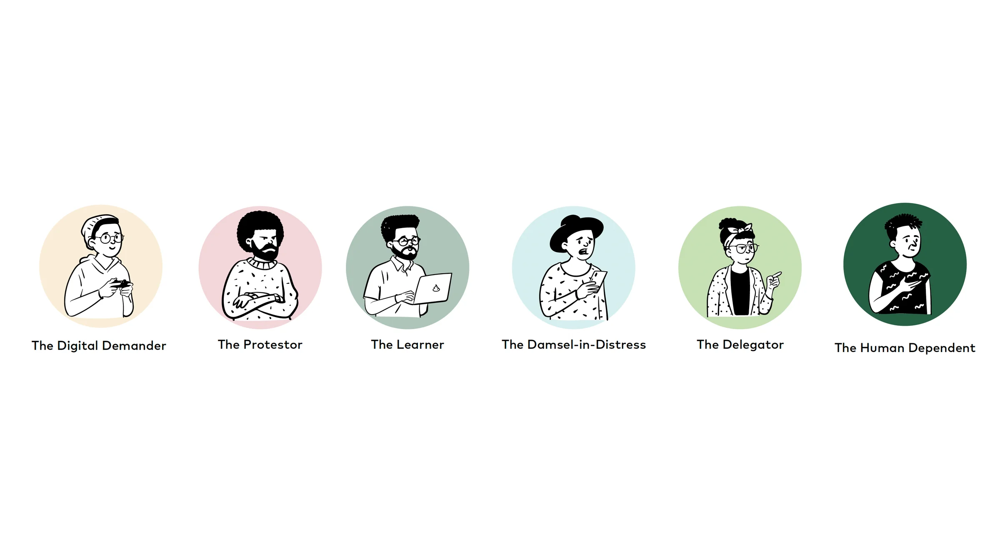
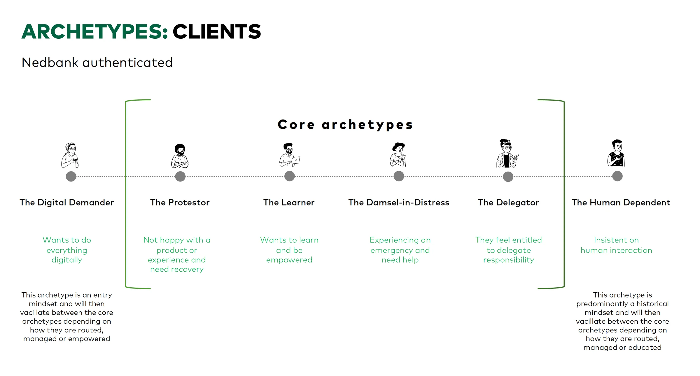
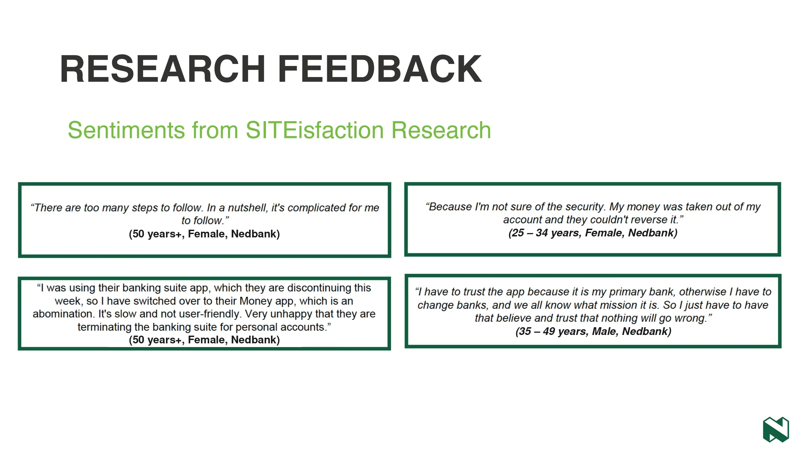

Overview
Nedbank's onboarding had to work for more than 2 million active users, from people who want to do everything in the app to people who insist on talking to a person. A few static personas couldn't hold that range. On the onboarding project, working with a design lead and a product owner, we built dynamic customer archetypes based on two things: digital literacy and onboarding intent. Several design and product teams adopted them for their own onboarding work.
Part of the Nedbank onboarding case study

Six archetypes, one customer base. Each illustration stands for a mindset, not a demographic.
A persona can't change its mind, but customers do
A persona describes who someone is. The archetype work rested on a different observation: the same customer acts differently depending on how they're routed, managed and helped. Someone confident in the app can need urgent help the moment a step fails. A static persona can't show that shift. So we described the mindsets people move through instead.
Six archetypes, four in the middle
The Digital Demander wants to do everything digitally. The Human Dependent insists on human interaction. Those two sit at the ends as starting mindsets. In between are the four core archetypes: the Protestor, unhappy and needing recovery; the Learner, who wants to learn and be empowered; the Damsel-in-Distress, in an emergency and needing help; and the Delegator, who feels entitled to hand responsibility to someone else.

The six archetypes by name, so teams could talk about them in shorthand.

The spectrum. People start at either end and move between the four core archetypes depending on how they're routed, managed, empowered or educated.
Built from what customers told us
The archetypes came out of the same research as the rest of the onboarding work: time with customers and branch staff, plus the SITEisfaction 2020 survey. Lines like "There are too many steps to follow" and "I have to trust the app because it is my primary bank" were the raw material.

Customer quotes from the SITEisfaction 2020 research that fed the archetypes.
The question changed from "who" to "which mindset, right now"
With archetypes, a team could ask which mindset someone is in at this step and where we want them to end up. The descriptions point straight at design moves. A Learner wants a step explained. A Damsel-in-Distress needs help fast. A Protestor needs recovery before anything else. Several design and product teams picked the archetypes up to shape their onboarding flows.